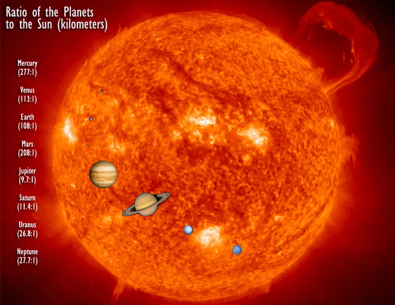
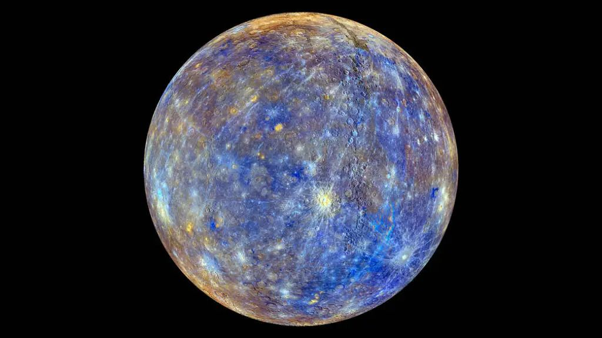
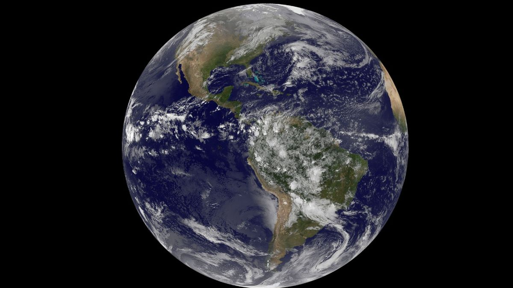
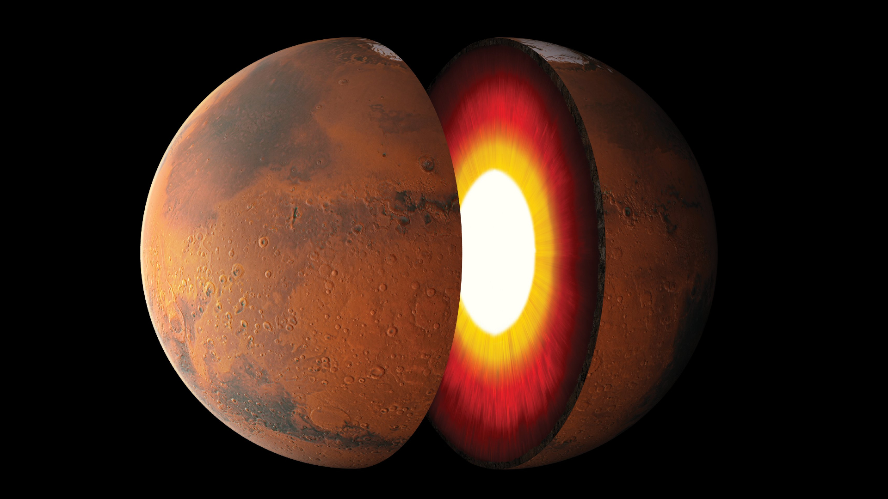
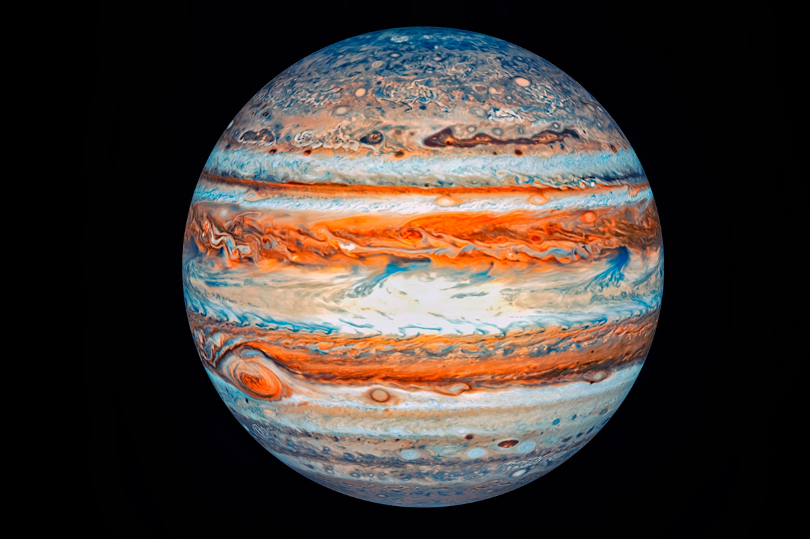

Solar System
The Solar System is the gravitationally bound system of the Sun and the objects that orbit it. It formed about 4.6 billion years ago when a dense region of a molecular cloud collapsed, forming the Sun and a protoplanetary disc.
The largest objects that orbit the Sun are the eight planets. In order from the Sun, they are four terrestrial planets (Mercury, Venus, Earth and Mars); two gas giants (Jupiter and Saturn); and two ice giants (Uranus and Neptune). All terrestrial planets have solid surfaces. Inversely, all giant planets do not have a definite surface, as they are mainly composed of gases and liquids.
There is a strong consensus among astronomers that the Solar System has at least nine dwarf planets: Ceres, Orcus, Pluto, Haumea, Quaoar, Makemake, Gonggong, Eris, and Sedna. There are a vast number of small Solar System bodies, such as asteroids, comets, centaurs, meteoroids, and interplanetary dust clouds.
The Solar System is constantly flooded by the Sun's charged particles, the solar wind, forming the heliosphere. Around 75–90 astronomical units from the Sun, the solar wind is halted, resulting in the heliopause. This is the boundary of the Solar System to interstellar space.
The Sun

The Sun is the Solar System's star and by far its most massive component. Its large mass (332,900 Earth masses), which comprises 99.86% of all the mass in the Solar System, produces temperatures and densities in its core high enough to sustain nuclear fusion of hydrogen into helium. This releases an enormous amount of energy, mostly radiated into space as electromagnetic radiation peaking in visible light.
The Sun is a population I star, having formed in the spiral arms of the Milky Way galaxy. It has a higher abundance of elements heavier than hydrogen and helium ("metals" in astronomical parlance) than the older population II stars in the galactic bulge and halo.
Along with light, the Sun radiates a continuous stream of charged particles (a plasma) called the solar wind. This stream spreads outwards at speeds from 900,000 kilometres per hour (560,000 mph) to 2,880,000 kilometres per hour (1,790,000 mph), filling the vacuum between the bodies of the Solar System. The result is a thin, dusty atmosphere, called the interplanetary medium, which extends to at least 100 AU.
Activity on the Sun's surface, such as solar flares and coronal mass ejections, disturbs the heliosphere, creating space weather and causing geomagnetic storms. Coronal mass ejections and similar events blow a magnetic field and huge quantities of material from the surface of the Sun. The interaction of this magnetic field and material with Earth's magnetic field funnels charged particles into Earth's upper atmosphere, where its interactions create aurorae seen near the magnetic poles.
Inner Solar System
The inner Solar System is the region comprising the terrestrial planets and the asteroids. Composed mainly of silicates and metals, the objects of the inner Solar System are relatively close to the Sun; the radius of this entire region is less than the distance between the orbits of Jupiter and Saturn.
Inner planets
The four terrestrial or inner planets have dense, rocky compositions, few or no moons, and no ring systems. They are composed largely of refractory minerals such as silicates—which form their crusts and mantles—and metals such as iron and nickel which form their cores. Three of the four inner planets (Venus, Earth, and Mars) have atmospheres substantial enough to generate weather; all have impact craters and tectonic surface features, such as rift valleys and volcanoes.
Mercury

- Is the smallest planet in the Solar System. Its surface is grayish, with an expansive rupes (cliff) system generated from thrust faults and bright ray systems formed by impact event remnants. The surface has widely varying temperature, with the equatorial regions ranging from −170 °C (−270 °F) at night to 420 °C (790 °F) during sunlight. In the past, Mercury was volcanically active, producing smooth basaltic plains similar to the Moon. It is likely that Mercury has a silicate crust and a large iron core. Mercury has a very tenuous atmosphere, consisting of solar-wind particles and ejected atoms. Mercury has no natural satellites.
Venus

- Has a reflective, whitish atmosphere that is mainly composed of carbon dioxide. At the surface, the atmospheric pressure is ninety times as dense as on Earth's sea level. Venus has a surface temperatures over 400 °C (752 °F), mainly due to the amount of greenhouse gases in the atmosphere. The planet lacks a protective magnetic field to protect against stripping by the solar wind, which suggests that its atmosphere is sustained by volcanic activity. Its surface displays extensive evidence of volcanic activity with stagnant lid tectonics. Venus has no natural satellites.
Earth

- Is the only place in the universe where life and surface liquid water are known to exist. Earth's atmosphere contains 78% nitrogen and 21% oxygen, which is the result of the presence of life. The planet has a complex climate and weather system, with conditions differing drastically between climate regions. The solid surface of Earth is dominated by green vegetation, deserts and white ice sheets. Earth's surface is shaped by plate tectonics that formed the continental masses. Earth's planetary magnetosphere shields the surface from radiation, limiting atmospheric stripping and maintaining life habitability.
- The Moon is Earth's only natural satellite. Its diameter is one-quarter the size of Earth's. Its surface is covered in very fine regolith and dominated by impact craters. Large dark patches on the Moon, maria, are formed from past volcanic activity. The Moon's atmosphere is extremely thin, consisting of a partial vacuum with particle densities of under 107 per cm−3.
Mars

- Has a radius about half of that of Earth. Most of the planet is red due to iron oxide in Martian soil, and the polar regions are covered in white ice caps made of water and carbon dioxide. Mars has an atmosphere composed mostly of carbon dioxide, with surface pressure 0.6% of that of Earth, which is sufficient to support some weather phenomena. During the Mars year (687 Earth days), there are large surface temperature swings on the surface between −78.5 °C (−109.3 °F) to 5.7 °C (42.3 °F). The surface is peppered with volcanoes and rift valleys, and has a rich collection of minerals. Mars has a highly differentiated internal structure, and lost its magnetosphere 4 billion years ago.
Outer Solar System
The outer region of the Solar System is home to the giant planets and their large moons. The centaurs and many short-period comets orbit in this region. Due to their greater distance from the Sun, the solid objects in the outer Solar System contain a higher proportion of volatiles such as water, ammonia, and methane, than planets of the inner Solar System because their lower temperatures allow these compounds to remain solid, without significant sublimation.
Outer planets
The four outer planets, called giant planets or Jovian planets, collectively make up 99% of the mass orbiting the Sun. All four giant planets have multiple moons and a ring system, although only Saturn's rings are easily observed from Earth.
Jupiter

- Is the smallest planet in the Solar System. Its surface is grayish, with an expansive rupes (cliff) system generated from thrust faults and bright ray systems formed by impact event remnants. The surface has widely varying temperature, with the equatorial regions ranging from −170 °C (−270 °F) at night to 420 °C (790 °F) during sunlight. In the past, Mercury was volcanically active, producing smooth basaltic plains similar to the Moon. It is likely that Mercury has a silicate crust and a large iron core. Mercury has a very tenuous atmosphere, consisting of solar-wind particles and ejected atoms. Mercury has no natural satellites.
Saturn

- Has a reflective, whitish atmosphere that is mainly composed of carbon dioxide. At the surface, the atmospheric pressure is ninety times as dense as on Earth's sea level. Venus has a surface temperatures over 400 °C (752 °F), mainly due to the amount of greenhouse gases in the atmosphere. The planet lacks a protective magnetic field to protect against stripping by the solar wind, which suggests that its atmosphere is sustained by volcanic activity. Its surface displays extensive evidence of volcanic activity with stagnant lid tectonics. Venus has no natural satellites.
Uranus

- Is the only place in the universe where life and surface liquid water are known to exist. Earth's atmosphere contains 78% nitrogen and 21% oxygen, which is the result of the presence of life. The planet has a complex climate and weather system, with conditions differing drastically between climate regions. The solid surface of Earth is dominated by green vegetation, deserts and white ice sheets. Earth's surface is shaped by plate tectonics that formed the continental masses. Earth's planetary magnetosphere shields the surface from radiation, limiting atmospheric stripping and maintaining life habitability.
Neptune

- Has a radius about half of that of Earth. Most of the planet is red due to iron oxide in Martian soil, and the polar regions are covered in white ice caps made of water and carbon dioxide. Mars has an atmosphere composed mostly of carbon dioxide, with surface pressure 0.6% of that of Earth, which is sufficient to support some weather phenomena. During the Mars year (687 Earth days), there are large surface temperature swings on the surface between −78.5 °C (−109.3 °F) to 5.7 °C (42.3 °F). The surface is peppered with volcanoes and rift valleys, and has a rich collection of minerals. Mars has a highly differentiated internal structure, and lost its magnetosphere 4 billion years ago.